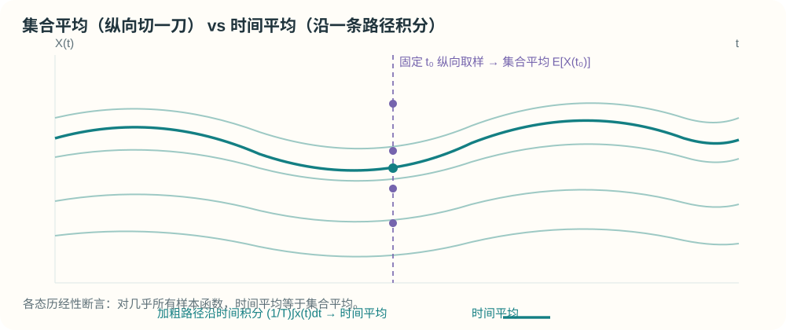
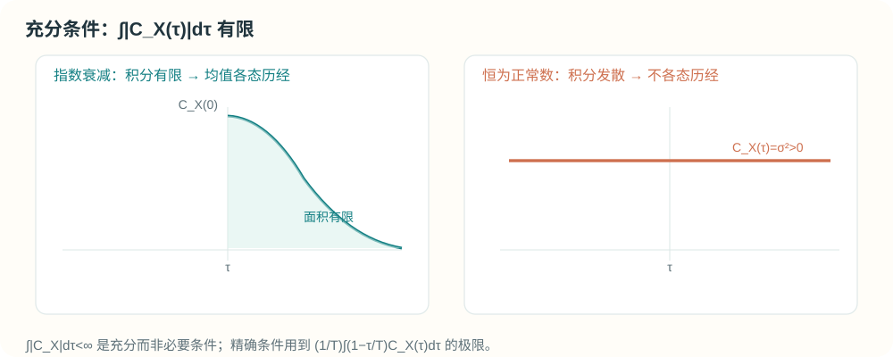
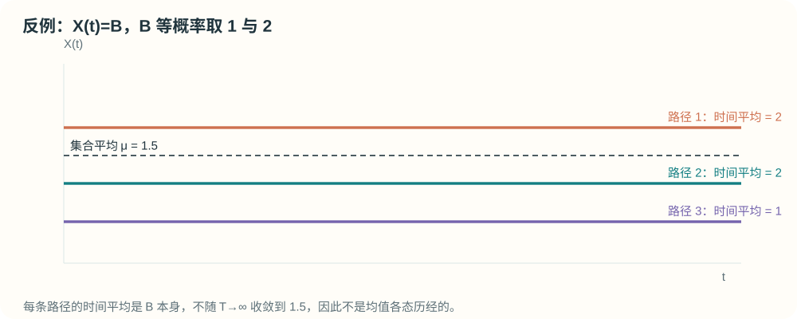

CHAPTER 11 · 随机过程与谱
各态历经性与实验测量
通常我们只有一条有限长度的记录，却想估计整个过程的均值与自相关。时间平均什么时候能代替集合平均？这需要区分平稳性与各态历经性，说清均值各态历经的充分条件和精确条件。
- 区分集合平均、时间平均与两者的收敛含义
- 写出均值各态历经的充分条件并给出非各态历经反例
- 说明有偏自相关估计与蒙特卡罗收敛率 O(1/√N) 的由来
一条记录能代表全部吗？
真正的集合平均要在固定时刻 t₀ 对所有可能的样本取值求期望 E[X(t₀)]，需要无穷多次独立实验；而手头只有一条长度 T 的记录 x(t)，它的时间平均是
称宽平稳过程均值各态历经，若对几乎所有样本函数都有 ⟨x⟩=μX。注意这是逐条路径的断言，比“时间平均的期望等于 μ”更强：后者只是无偏性，前者要求每一条足够长的路径都收敛到同一个常数。

平稳性不蕴含各态历经性：平稳只是各态历经的前提之一。一个过程可以宽平稳却完全不各态历经，下一节会给出显式反例。
什么条件保证时间平均收敛？
时间平均是一个随机变量（随样本函数变化）。均方意义下，它收敛于 μX 当且仅当它的方差趋于零，而该方差正好由自协方差 CX(τ)=RX(τ)−μX² 给出：
由 (11.2) 立即得到一个常用的充分条件：若 ∫|CX(τ)|dτ<∞，则三角形权重被 1/T 压住，方差必然趋于零，过程均值各态历经。注意它只是充分的，不是必要的——存在 ∫|CX| 发散但 (11.2) 仍成立的例子（例如 CX(τ) 缓慢振荡且与 τ 的乘积有界）。
在频域，这个条件等价于说：过程没有随机的直流分量，即谱测度在 ω=0 处没有原子（无 δ 冲激）。这也解释了为何非零均值本身不破坏各态历经：真正致命的是“均值是一个随机变量”。

反例：平稳却不各态历经
设 B 是一个非退化随机变量，E[B]=μ、Var(B)=σ²>0，令 X(t)=B 对所有 t 成立。它的样本路径是一条水平直线，但不是同一条。直接验证宽平稳：
均值为常数、自相关与 τ 无关且均方有限，所以它是宽平稳的。但单条路径的时间平均就是 B 本身，它是一个随机变量，不会收敛到常数 μ。由 (11.3)，CX(τ)=σ² 的积分发散，不满足充分条件；由更根本的 (11.2) 可知方差始终为 σ²≠0，因此不是均值各态历经。

注意 σ²=0 的退化情形：若 B 是确定性常数（σ²=0），则过程是确定性信号，时间平均当然等于该常数，也就不再构成反例。反例的关键正是“均值本身是随机的”。
从数据估计统计量：用哪个分母？
对离散序列 x[0],…,x[N−1]，直接的平均估计是无偏的：E[μ̂X]=μX。自相关估计则有两种选择，差在一个分母：
有偏估计在 m≠0 时期望为 (N−m)/N·RX[m]，偏差随 N≫m 可忽略，但它对应的序列是非负定的，因此其傅里叶变换（谱估计）不会出现负值；无偏估计虽无偏，却可能给出负的谱。实际中常选有偏形式，正是为了谱的非负性。
若还要用时间平均估计自相关，需要相关各态历经，其条件比均值各态历经更严（通常涉及四阶矩及其衰减）。工程上的稳健做法是：数据长度 T 远大于相关时间 τc，并将长记录分成多段分别估计再平均，既降低方差也便于检查结果是否稳定。
蒙特卡罗的收敛速度：用 M 个独立样本估计均值时，均值的标准误为 σ/√M，即误差以 O(1/√M) 下降。要提高一位有效数字（误差降为 1/10），样本量大约要增加 100 倍——这是仿真验证必须预留的计算代价。
验证有偏估计的谱非负性
用一个小序列直接验证：有偏自相关估计的离散时间傅里叶变换等于 |X(ω)|²/N，因而必定非负。注意 DFT 的符号约定为 e−jωn。
from math import pi, cos, sin
x = [1.0, 2.0, 3.0, 4.0]
N = len(x)
r = [sum(x[n]*x[n+m] for n in range(N-m))/N for m in range(N)]
for k in range(N):
w = 2*pi*k/N
S = sum(r[abs(l)]*(cos(w*l) - 1j*sin(w*l)) for l in range(-(N-1), N))
X = sum(x[n]*(cos(w*n) - 1j*sin(w*n)) for n in range(N))
assert abs(S - (abs(X)**2)/N) < 1e-9 # exact identity
assert S.real > -1e-9 # nonnegative spectrum
# standard error squared of a sample mean is sigma^2/M
sigma2, M = 4.0, 100
assert (sigma2/(4*M)) == (sigma2/M)/4 # quadrupling M quarters the variance
自检：为什么习惯用有偏的 1/N 而不是无偏的 1/(N−m)？
因为 1/N 形式对应序列是非负定的，其傅里叶变换（谱估计）不会为负；1/(N−m) 虽无偏，却可能得到负的谱。当 N≫m 时，两者的差别可以忽略。
边界：各态历经是要验证的假设
- 收敛模式不同：均值各态历经至少有两种口径——均方收敛（面向 (11.2) 的方差）与几乎必然收敛（Birkhoff 逐点遍历定理，需要严平稳加遍历性）。本章的充分条件保证的是均方收敛；把两者混用会引出错误的结论。
- 平稳性前提不能省：若信号有趋势项或周期性成分（如工频干扰），它本身就不平稳，各态历经更无从谈起。在估计前应先做去趋势或滤波。
- 有限数据总有误差：即使过程确实各态历经，有限长度 T 的时间平均仍带有方差量级 O(σ√(τc/T)) 的随机误差，“近似相等”不等于“相等”。
- 实用检查：把记录分成多段，分别计算均值与谱，若段间差异显著，就说明平稳性或各态历经性可疑；同时保证 T 远大于相关时间 τc。
结论：各态历经性把“一条记录”与“总体规律”连起来，但它的成立需要条件，也需要用数据去检查。下一章将在这个前提下分析随机信号通过线性系统的统计变换。
参考与核查依据
- MIT OpenCourseWare · Random Processes：时间平均与集合平均、平稳过程与各态历经性的讨论。
- ProbabilityCourse · Stationary Processes：严平稳、宽平稳与遍历性定理的前提。
- ProbabilityCourse · Autocorrelation and PSD：自相关估计与谱的非负性背景。